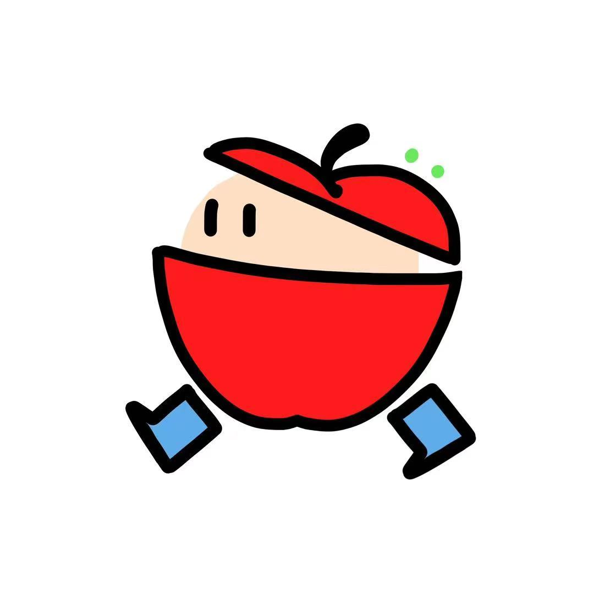

果宠社区
FRUIT PETS COMMUNITY
搜索
个人中心

果宠
我参与的话题
#苹果宠攻略
#鲜果开箱分享
#果宠的治愈瞬间
我参与的活动与挑战
#果宠时装挑战赛
#果宠养成比拼
表情
图片
视频
话题
发送
动态
话题
视频
活动与挑战
种植技巧和方法
我的农村生活
芥菜主要以秋插为主，从七月下旬至十月可陆续播种，芥菜生长升温为15到25度，一般以秋播为主。种植芥菜时，我们要选择通透性，排水性都较良好且比较肥沃的土地，这样的土地有利于芥菜的生长和后续管理。种植芥菜前，我们需要将土地进行翻整，以便为芥菜提供良好的生长环境。
发布于：2023-04-06 16:52
评论
分享
收藏
点赞
话题热议榜
1
收到的水果好新鲜！
2
你的苹果宠长到什么阶段了？
3
被果宠治愈到了
4
橘宠限时购
5
香蕉的生长过程
6
果宠时装大赛进行中
7
我的果宠独one无two
8
第一批集齐果宠的人已就位
9
什么水果维C含量高？
10
今天你吃水果了吗